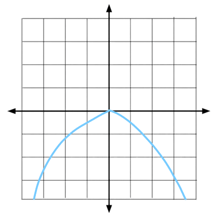
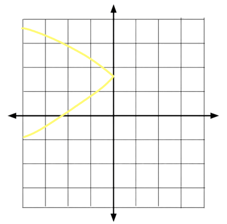
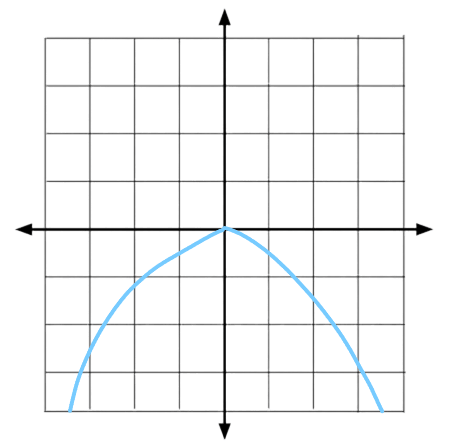
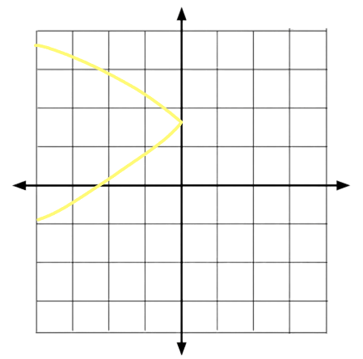
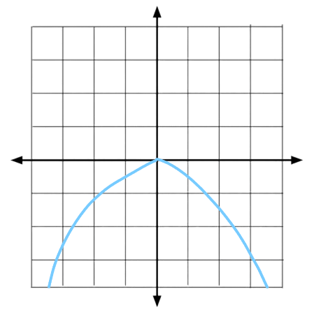
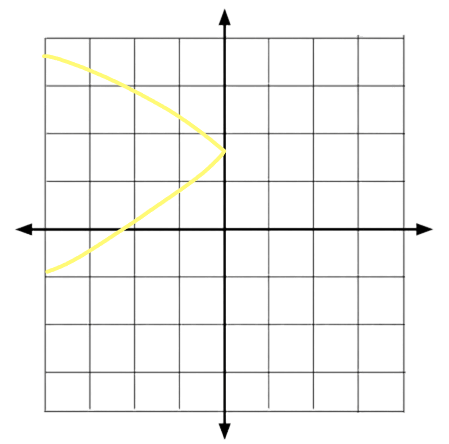
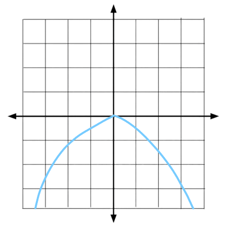
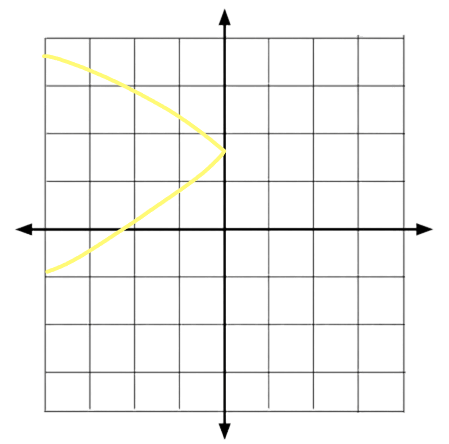

y2 = 4ax
Or when it points down, it's formula would instead be...y2 = -4ax
And when a parabola points to the right or to the left, it's general formula will now be...To the right:
x2 = 4ay
To the left:
x2 = -4ay
Points up: y2 = 4ax
Points down: y2 = -4ax
Points to the left: x2 = 4ay
Points to the right: x2 = -4ay